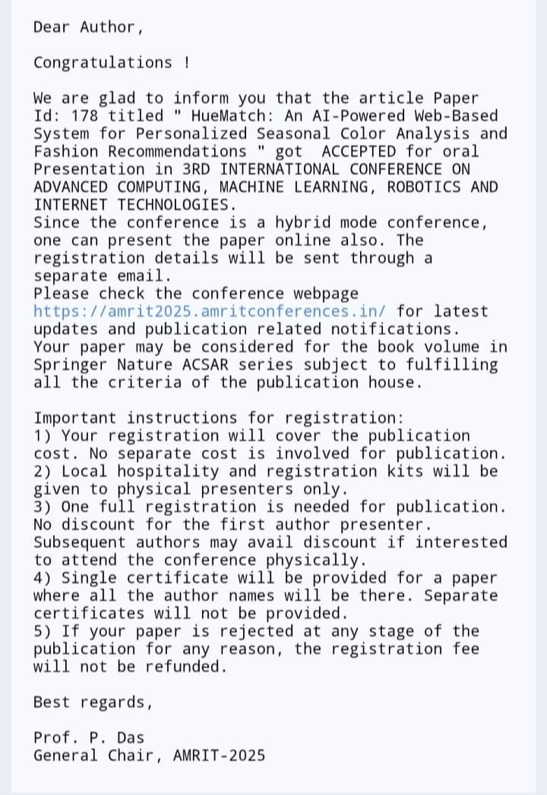

Exploring Representation Learning & Perceptual Invariance | Springer Oral Paper | Research Projects
About
I am a second-year BTech Computer Science student at VIT Bhopal University, India,
with research interests in machine learning, representation learning, and human perception.
University: VIT Bhopal University
Degree: BTech CSE
Expected Graduation: 2028
Country: India
Research Experience
HueMatch
Conference Paper · Springer · Accepted
AI-powered web-based system for personalized seasonal colour analysis
and fashion recommendations.
Role: 2nd author · Main implementer · Idea contributor
Conceptual Research Directions
When Permutation Invariance Fails
Perceptual Invariance Improves Generalization
Illumination Invariance via Edge-Based Representations
“HueMatch: An AI-Powered Web-Based System for Personalized Seasonal Color Analysis and Fashion Recommendations”
Springer · Oral Presentation

Acceptance email — HueMatch